HOME
A Malaysian Chinese American Scientist and Her Mum Visit Puerto Rico by Rita Lim-Wilby |
|
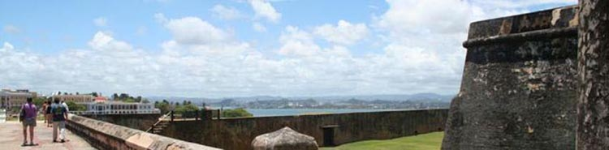
Puerto Rico is an island, and is part of the chain that includes Cuba, Haiti, and the Dominican Republic, whereas Costa Rica is in Central America, in the lower left corner of the map, just northwest of Panama. It was a good thing Jet Blue knew the difference. We arrived safely. My mother was visiting from Malaysia and San Diego is a bit too cold for her, even in the summer. Wouldn't it be nice to visit a warm sunny isle for a few days, and have some mother-daughter bonding time? I had found the Andalucia Guest House at Ocean Park, San Juan. Ocean Park is a residential area, right on the beach and ten minutes from Luis Muñoz Marín International Airport, where we landed from New York. Sharing the same beach is the adjacent neighborhood of Condado, which you will know by the high rise apartment blocks and swanky hotels. Old San Juan The first day, we were guided to a wonderful bakery, Kasalta, which also served tapas, sandwiches, soups, desserts. Everything in there was delicious. There was a constant stream of people at the counter, although it seemed always possible to get a seat. As a vegetarian-wannabe, I should warn you that PR is not the place to be faithful to your macrobiotic no-meat low-calorie diet. Impatient to see the sights, Mum and I took bus #53 to Old San Juan. Walking around is the best way to see the old Spanish-influenced architecture and cobblestone streets. (Do wear sensible walking shoes, as my friend, Aileen Alvarado-Swaisgood, had advised.) If you'd like to see more and get a rest, board any of the free trolleys at one of these signs, but beware that the route does not follow any maps that you may have been given, and that the stops are not sequentially numbered. ;-) 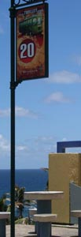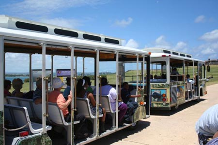 The far northeast end of the walled city, by the fort El Morro, is gloriously windy. On the first Saturday of May when we visited, and it looks like it would be so on every Saturday, families picnic there, fly kites, watch people, and bask in the beautifully soft sunshine, kept cool by the constant breezes. 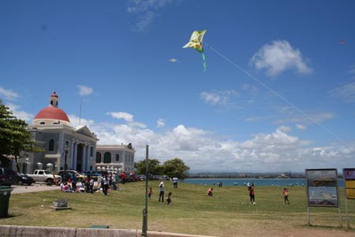 In the House of Puerto Rico cottage in San Diego's Balboa Park, there is a garitas with plaques of supporters' names. Aptly, the garitas, sturdy guardsman's posts, are a feature of the forts in Old San Juan. In the days of cannons and rifles, they provided narrow windows through which you could snipe at attackers. 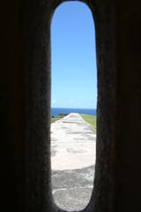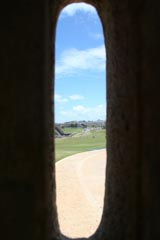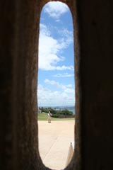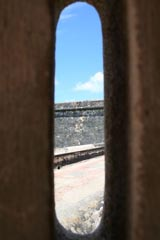 Fort San Felipe del Morro, as the five hundred year-old castle might be called, is majestic, undefeated, and elaborately mazelike. It is a must-see, the jewel in Old San Juan, and one of the reasons for the city's designation as a UNESCO World Heritage Site. 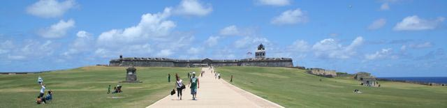 According to the Far East Asian concept of beauty, fairness of skin is paramount. Trained by decades of such thinking, we equipped with the Andalucia Guest House umbrella to venture across the windy path to El Morro. After ten steps, or less, we gave up any attempt to keep the umbrella into the wind, which played tag hilariously with us. Don't bother with a hat or cap either. This is a great place to use your SPF 50+ sunscreen if you're planning to venture out of the garitas or any of the cavernous tunnels or rooms in the fort. 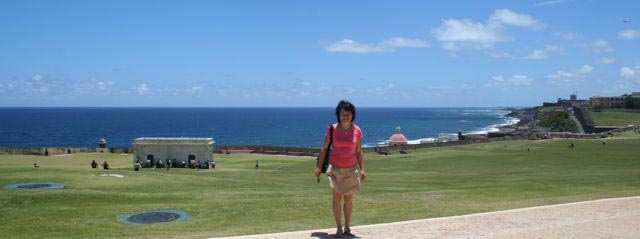 We took the trolley back along the northern side of Old San Juan, with spectacular views over La Perla into the South Atlantic Ocean. 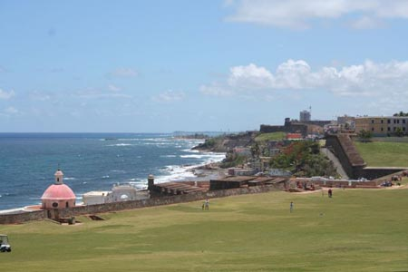 After lunch, we went to see Bodies, The Exhibition, an internationally touring work on plastinized bodies. I was fascinated, happy to spend more than three hours in there. The next day was for church (Mum) and beach (me). Both the church service and beach talk were in Spanish, of course. I don't think either needed much translation. In Search of Puerto Rican Coffee On the Monday, we planned to visit Hacienda Buena Vista, then realised that they were closed. Studying a map given us by the airport GoToPuertoRico office, we settled on Hacienda Cafe Bello in Adjuntas. As you might have expected, shade-grown coffee is grown in remote areas amidst the tropical forest where rain falls and land is aplenty. It was a wonderful drive: thirty minutes on beautifuly-paved freeway, followed by an hour on gorgeous green shady roads hugging mountain cliffs, with spectacular views. Strung along the roads were little villages or simple collections of homes. Streams of water often crossed the now single width lanes, where the rain had collected from that morning - easier to drive over than cows on the road in Sri Lanka, not that I have anything against cows or water. After the patchy cell phone signal navigating by the iPhone's Google Map, we finally found Cafe Bello, weak-kneed and looking to stretch our legs. Not knowing what to expect - my last plantation tour had been a Dole pineapple farm on Oahu - I anticipated that a few tourist buses and guides might have been ahead of us. Instead, we found an office, many warehouses, but not a single gift shop! The lone assistant in the office had some coffee to sell, but we were looking for real action with coffee bean processing machines and a narrative. She picked up her phone, I hoped the call to her friend would not take long. With a few looks, we understood that a few minutes' wait might lead fruitfully to a coffee trail. Soon after, a young man in a Cafe Bello shirt appeared and spoke English to us with a Dutch accent. We were now totally confused, but soon all became clear as he led us to a roofed collection of machines. Did I mention that there were no other tourists, nevermind any tourist buses, on the premises? Our host, Andries de Jong, gave us a wonderful exclusive individualized tour of his hacienda. He ran the enterprise, as his partner, his brother, is now in med school for some years. And the Dutch accent? His family had settled in PR to grow citrus fruits, as he pointed to a few orange trees, specimens which would have been in the other venture that he could have taken. 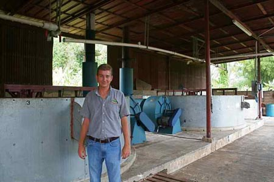 We ended the tour with sampling of a freshly roasted coffee beans - really crunchy and aromatic, hardly bitter. Finally, we retired to his air-conditioned office for the pièce de résistance of the coffee brewing and tasting. Andries apologised for the coffee having been roasted more than a week earlier. His assistance asked how we liked the coffee. Looking to savor the taste unadulterated, I bravely said "black". It was glorious, very full, like dark chocolate, with hints of berries and nuts. We bought lots of coffee from Andries and promised to spread the word in the mainland. He headed to the warehouse eagerly. After 15 minutes, Andries returned empty-handed. Perhaps we may prefer some freshly roasted coffee as they were out of stock, having completed outstanding orders? Absolutely, we always drink our shade-grown coffee within one week of roasting, so would be happy to wait to do his crops justice. He was also kind enough to ship (at no extra charge) to us the coffee we wanted to buy. We thought we might also stop by our original destination, Hacienda Casa Grande, but it was another 20 mins drive from Utuado, and being Monday, the other attractions (the lake, caves) were closed, so we passed on that and drive through. Best time to tour the coffee haciendas is during harvest season Oct-Dec, so that you can see how they actually process the beans instead of just hearing about it. I guess that makes it ideally November-December, to avoid the hurricane season. On the way back to San Juan On the way back, we drove via Ponce. Ponce is Ponce, meaning it is different than San Juan. It is also in the south, in the shadow of the mountains from the rain-bearing clouds. Perhaps we were overloaded from the hacienda visit, or did not know where to go in Ponce. On the drive to the new fast freeway direct to San Juan, we found this wonderful fruit stand, and brushed up our mercantile Spanish. 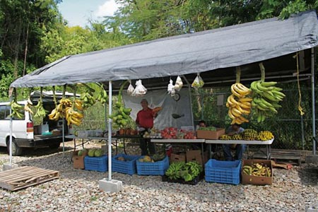 The next day, we returned to San Diego, to May Gray and more Chinese herbal stews by Mum. The coffee arrived as promised, within the week. We are still appreciating the aroma and the memories.
|